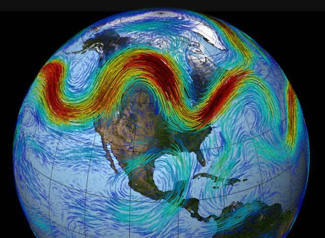

¿Cuál es el principal factor para que el tiempo vaya cambiando?
|  | ¿Qué es el Jet Stream o Corriente en chorro? |
|---|---|
| En la Tierra, según la Organización Meteorológica Mundial, una corriente en chorro es una fuerte y estrecha corriente de aire concentrada a lo largo de un eje casi horizontal en la alta troposfera o en la estratosfera, caracterizada por una fuerte cizalladura vertical y horizontal del viento. Presentando uno o dos máximos de velocidad, la corriente en chorro discurre, normalmente, a lo largo de varios miles de kilómetros, en una franja de varios centenares de kilómetros de anchura y con un espesor de varios kilómetros. |